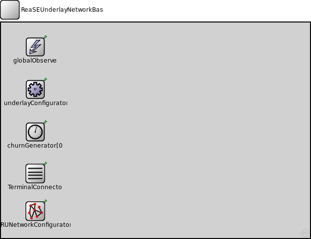
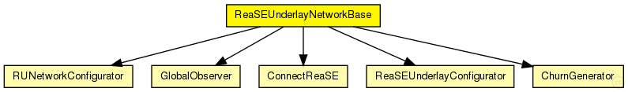
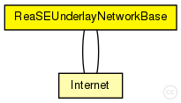

This documentation is released under the Creative Commons license
This documentation is released under the Creative Commons licenseThe InetUnderlay ned-file
See also: ReaSEUnderlayConfigurator
The following diagram shows usage relationships between types. Unresolved types are missing from the diagram. Click here to see the full picture.
The following diagram shows inheritance relationships for this type. Unresolved types are missing from the diagram. Click here to see the full picture.
| Internet (compound module) | (no description) |
| Internet (compound module) | (no description) |
| Name | Type | Default value | Description |
|---|---|---|---|
| overlayType | string |
the overlay used in the simulation (for overlayBackboneRouters) |
|
| tier1Type | string |
the application on top of the overlay used in the simulation (for overlayBackboneRouters) |
|
| tier2Type | string |
the module type on top of tier 1 (for overlayBackboneRouters) |
|
| tier3Type | string |
the module type on top of tier 2 (for overlayBackboneRouters) |
| Name | Value | Description |
|---|---|---|
| display | bgl=49;bgb=631,441 |
| Name | Type | Default value | Description |
|---|---|---|---|
| underlayConfigurator.terminalTypes | string |
list of terminal types |
|
| underlayConfigurator.churnGeneratorTypes | string |
a list of churn generators to be used |
|
| underlayConfigurator.transitionTime | double |
time to wait before measuring after init phase is finished |
|
| underlayConfigurator.measurementTime | double |
duration of the simulation after init and transition phase |
|
| underlayConfigurator.gracefulLeaveDelay | double |
time between prekill and removal from overlay |
|
| underlayConfigurator.gracefulLeaveProbability | double |
probability of gracefull leave |
|
| globalObserver.globalNodeList.maliciousNodeProbability | double |
probability for a node to be malicious on creation |
|
| globalObserver.globalNodeList.maliciousNodeChange | bool |
dynamically change number of malicious nodes |
|
| globalObserver.globalNodeList.maliciousNodeChangeStartTime | double |
simTime at which nodes begin to become malicious |
|
| globalObserver.globalNodeList.maliciousNodeChangeRate | double |
number of nodes to change to malicious compared to all nodes |
|
| globalObserver.globalNodeList.maliciousNodeChangeInterval | double |
time between two node changes to malicious |
|
| globalObserver.globalNodeList.maliciousNodeChangeStartValue | double |
minimum amount of malicious nodes in the peerSet |
|
| globalObserver.globalNodeList.maliciousNodeChangeStopValue | double |
maximum amount of malicious nodes in the peerSet |
|
| globalObserver.globalNodeList.maxNumberOfKeys | int |
maximum number of overlay keys the bootstrap oracle handles |
|
| globalObserver.globalNodeList.keyProbability | double |
probability of keys to be owned by nodes |
|
| globalObserver.globalParameters.rpcUdpTimeout | double |
default timeout value for direct RPCs |
|
| globalObserver.globalParameters.rpcKeyTimeout | double |
default timeout value for routed RPCs |
|
| globalObserver.globalParameters.printStateToStdOut | bool |
print overlay ready messages to std::cout |
|
| globalObserver.globalParameters.topologyAdaptation | bool |
turn on topologyAdaptation (for demonstrator) |
|
| globalObserver.globalTraceManager.traceFile | string |
file name of the trace file |
|
| globalObserver.globalStatistics.outputMinMax | bool |
enable output of minimum and maximum for scalars |
|
| globalObserver.globalStatistics.outputStdDev | bool |
enable output of standard deviation for scalars |
|
| globalObserver.globalStatistics.measureNetwInitPhase | bool |
fetch statistics in init phase? |
|
| globalObserver.globalStatistics.globalStatTimerInterval | double |
interval length of periodic statistic timer |
|
| churnGenerator.targetOverlayTerminalNum | int |
number of nodes after init phase |
|
| churnGenerator.initPhaseCreationInterval | double |
node creation interval in init phase |
|
| churnGenerator.noChurnThreshold | double |
if the lifetimeMean of a specific churn generator exceeds this, NoChurn is used instead |
|
| churnGenerator.channelTypes | string |
used (tx) access technologies (from common/channels.ned) |
|
| churnGenerator.channelTypesRx | string |
used (rx) access technologies (from common/channels.ned) |
|
| TerminalConnector.channelTypes | string |
list of (tx) channel types (from common/channels.ned) |
|
| TerminalConnector.channelTypesRx | string |
list of (rx) channel types (from common/channels.ned) |
|
| TerminalConnector.channelDiversity | double | 0 |
percentage a channel delay can differ from the channel type value |
// // The InetUnderlay ned-file @see ReaSEUnderlayConfigurator // module ReaSEUnderlayNetworkBase { parameters: string overlayType; // the overlay used in the simulation (for overlayBackboneRouters) string tier1Type; // the application on top of the overlay used in the simulation (for overlayBackboneRouters) string tier2Type; // the module type on top of tier 1 (for overlayBackboneRouters) string tier3Type; // the module type on top of tier 2 (for overlayBackboneRouters) @display("bgl=49;bgb=631,441"); submodules: underlayConfigurator: ReaSEUnderlayConfigurator { @display("p=70,137"); } globalObserver: GlobalObserver { parameters: @display("i=block/control;p=70,50"); } churnGenerator[0]: ChurnGenerator { @display("p=70,224,column"); } TerminalConnector: ConnectReaSE { @display("p=70,309"); } RUNetworkConfigurator: RUNetworkConfigurator { @display("p=70,386"); } connections: }
This documentation is released under the Creative Commons license